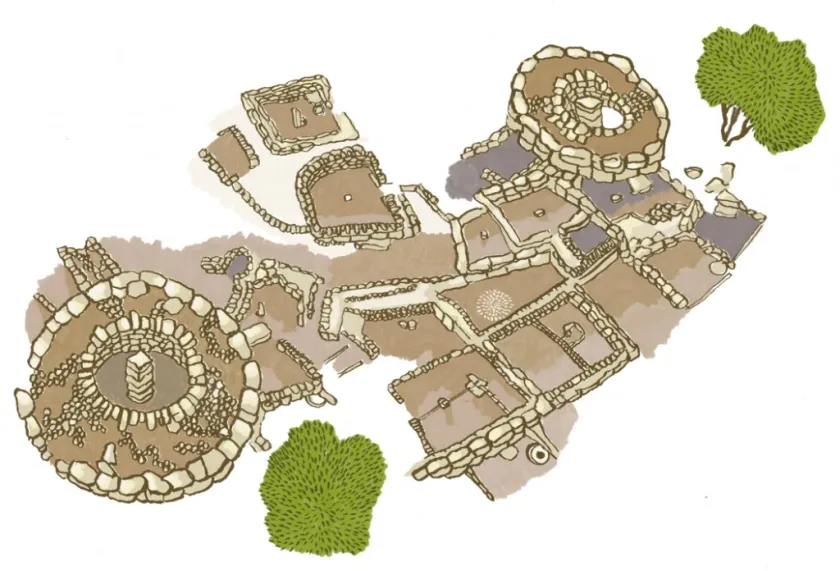
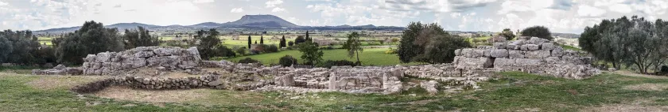
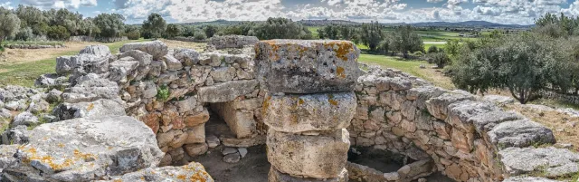
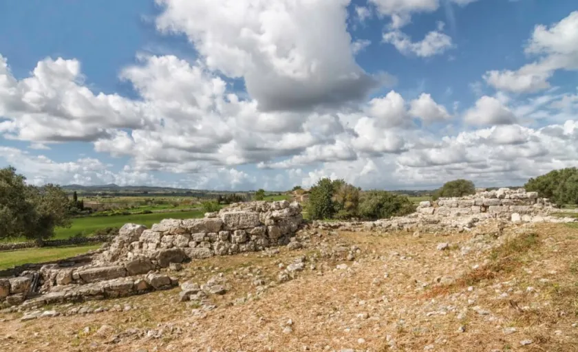

Son Fornés era un poblado talayótico genuino a través del cual podemos tener una visión clara de como era la vida y la sociedad de aquellos tiempos y su posterior transformación a medida que fue influenciada por culturas externas. Se trata de una yacimiento con varias fases que comprende desde el periodo talayótico hasta el clásico-romano. También se han documentado restos medievales e islámicos pero de carácter aislado. Se encuentra al nordeste del término municipal de Montuiri, al lado del kilómetro cuatro de la carretera que une Montuiri y Pina, en una pequeña elevación del Pla de Mallorca. Son Fornés estaba constituido por tres talayots en torno a los cuales se encuentran varias habitaciones. Todo el conjunto se encuentra rodeado por una muralla.
Esta sociedad estaba caracterizada por su alto grado de igualitarismo y autosuficiencia. La vida y la interacción social giraban en torno a los Talayots. Tenían una fuerte economía ganadera complementada por por el cultivo de cereales y leguminosas. La actividad agropecuaria se podría haber complementado con la recolección estacional de todo tipo de plantas que se encontraban alrededor del yacimiento. La comunidad talayótica que vivió en Son Fornés mantenía una economía de subsistencia. La comunidad participaba colectivamente en la construcción de obras públicas y también utilizaba de forma comunitaria los talayots como centros de distribución y consumo de carne, sobre todo de cerdo y de vacuno, animales que todas las familias ayudaban a criar.
Las decisiones políticas y la actividad ritual, enmarcadas igualmente en los talayots, no debieron ser prerrogativa de un jefe o líder, sino más bien de un Consejo formado por varias personas, tal vez representantes de las familias de la comunidad. Es de prever que las decisiones tomadas en Son Fornés tuvieron bastante peso en el marco de la sociedad talayótica de Es Pla. Son Fornés era un poblado importante, incluido en el grupo de los llamados «centrales», del cual dependían otros núcleos cercanos más pequeños. Aunque los edificios talayóticos transmiten una sensación de estabilidad, la sociedad que los construyó entró en crisis unos dos siglos después de haberlos construido. Al parecer surgieron sectores sociales con la capacidad de desmarcarse de las tradicionales relaciones de solidaridad económica y de segmentar o privatizar cada vez más la riqueza social. Parece como si el ordenamiento cívico-político y colectivizante representado en el mundo talayótico perdiera terreno frente a formas organizativas más proclives a la fragmentación del cuerpo social.
Como consecuencia de esta crisis, hacia el 550 a.C. el poblado fue pasto de las llamas y la antigua población dejó de habitar en él. Se abría entonces una época de incertidumbres que supuso la plena implantación de la sociedad postalayótica. Son Fornes volvió a ser habitado a inicios del siglo V a.C., años después del abandono catastrófico del poblado talayótico. El resultado fue un nuevo poblado totalmente distinto al anterior. Los cambios más llamativos se refieren a la ordenación urbanística. En el postalayótico las viviendas se distribuyeron de manera aleatoria, abriéndose entre ellas amplios espacios al aire libre. Cuando fue posible se reaprovecharon muros y bloques de piedra talayóticos en la construcción de las nuevas habitaciones. En cuanto a la subsistencia nos encontramos ante un panorama marcado por una combinación entre una ganadería diversificada y un componente agrícola basado en los cereales.
Hacia la primera mitad del siglo II a.C. se produce un fuerte cambio socio-económico, que termina con la romanización. Aumenta el comercio, con gran cantidad de ánforas para el transporte de vino y aceite. Algunas viviendas son abandonadas, mientras que otras perviven hasta el sigo IV de nuestra era. A mediados del siglo I de nuestra era Son Fornés entró en crisis, el número de habitantes cayó en picado y permaneció casi deshabitado durante más de tres siglos.
